Happy 1st Monthsary beb :>
code gods lang
Beb,
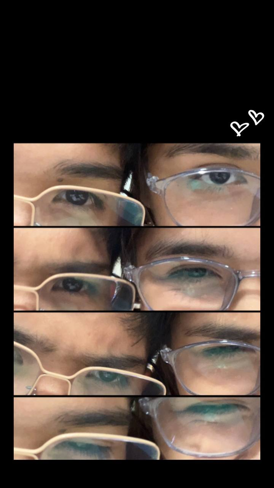
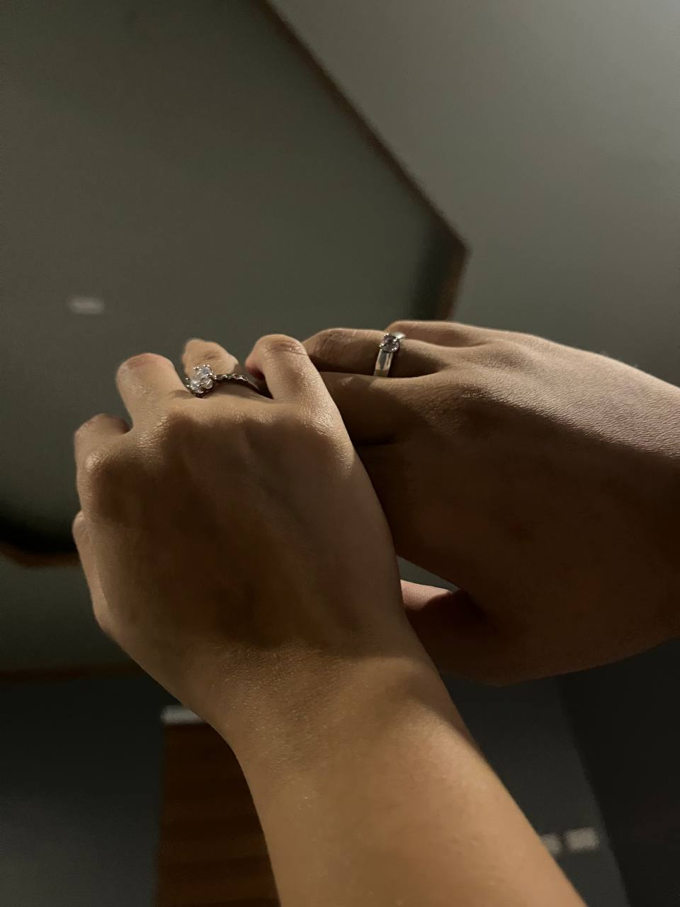
Alam natin both na hindi naging madali ang rs natin, and I know that more than anyone. There were days when everything felt heavy, when the world moved too fast, and when you had to be strong even when you were tired of being strong. You carried responsibilities, worries, and quiet battles that no one else could see. And yet, you still showed up — for life, for ur friends, and for us.
I admire you deeply for that. For every moment you doubted yourself but kept going anyway. For every time you smiled even when things weren't okay. For the nights we felt overwhelmed and the mornings we still chose to try again. Those moments matter. They don't go unnoticed, especially by me.
There were challenges this year that tested your patience, your confidence, and your heart. There were setbacks that made you question if you were doing enough or being enough. But through it all, you kept moving forward, not perfectly, not easily, but honestly. And that kind of strength is rare and beautiful.
Thank you for trusting me during the hard days. Thank you for letting me see you when you were vulnerable, when you were unsure, when you were scared. Loving you in those moments means more to me than loving you in the easy ones. Those are the moments that made our bond real and unbreakable.
If this year taught us anything, it's that love doesn't mean everything is always okay. It means choosing each other even when things are messy. It means holding on when letting go feels easier. And I'm so grateful that we chose each other, again and again.
Habang papatagal us ng papatagal, I want you to remember this: you are not behind, you are not weak, and you are not alone. You've grown in ways that don't always show on the surface, but I see them. I see how far you've come. And I'm so proud of you — not just for surviving this year, but for becoming even more you because of it.
No matter what comes next, I'm here. For the good days, the quiet days, and the hard ones too. Always with you. Always choosing you.
I love you — now and always.
Always yours,
Ianne
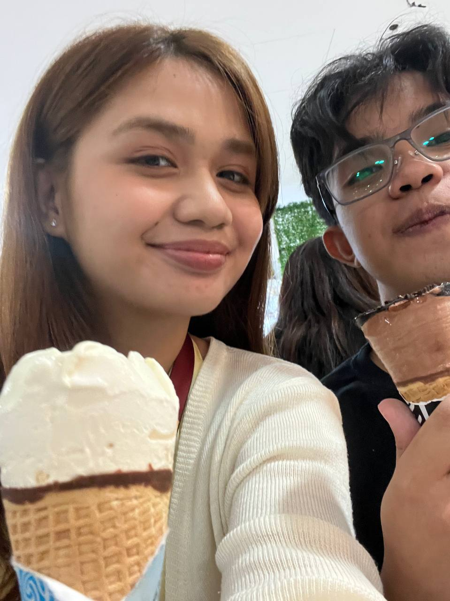
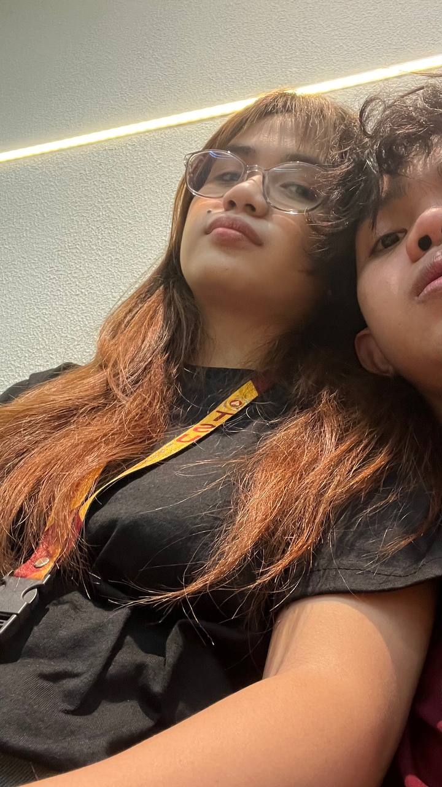
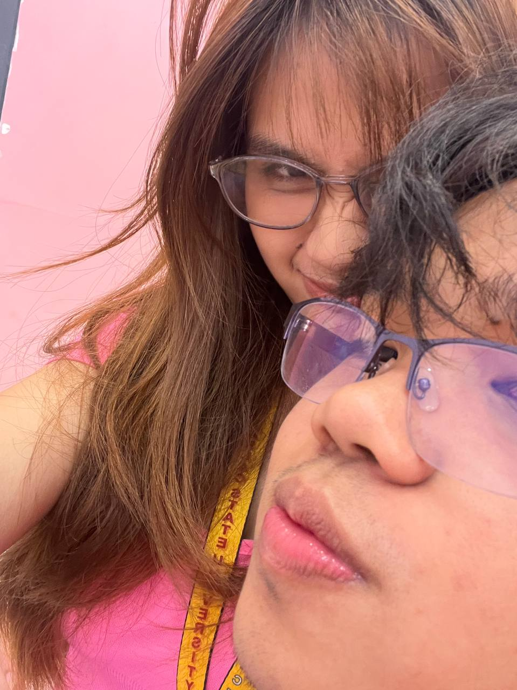
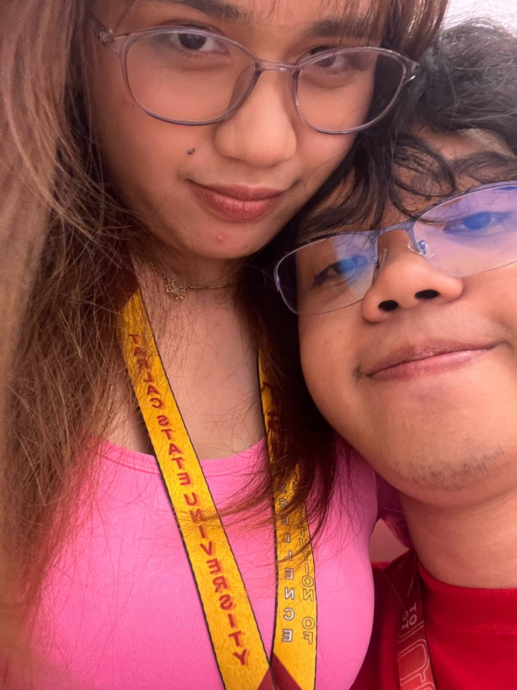
Happy 4th Monthsary beb :>
still here. still us.
Beb,
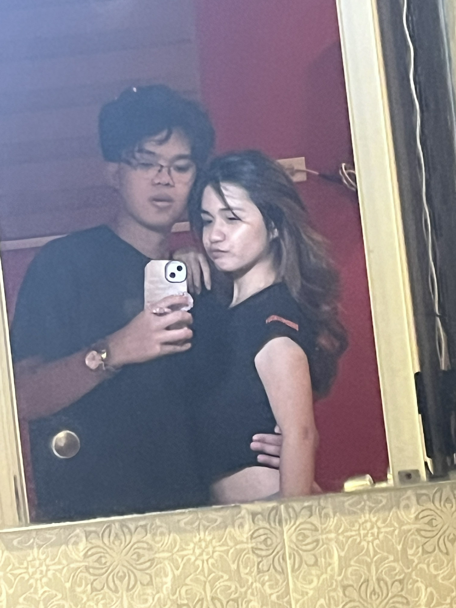
Four months. And honestly? I think the fact that we're here — that we made it to this — means more than any easy love ever could. Kasi alam natin what both sides of it looked like. We know how hard months two and three were. Yung mga away, hindi pagkakaintindihan, at minsan hindi pa tayo sure about satin dalawa altogether. And yet, we're still here.
I'm not going to pretend those months didn't happen. They did. Masakit. Mga bagay na hindi nasabi, araw na hindi tayo nag uusap, moments where I think we both wondered if we were even right for each other. That was real. I won't erase it.
But I also won't forget what came after. The fact that hindi lang tayo basta nag walk away. That we talked, even when it was hard. That we chose to figure it out instead of giving up. That took more courage than falling in love ever did. And I think that's the part that actually built us — and will continue to be our foundation.
Month four feels different. Quieter. More sure. Like we finally stopped trying to be perfect for each other and just started being real. And I like us like this much better. Messy, honest, still figuring things out but doing it together.
I know I'm not always easy. I know we're not always easy. But I think that's okay. I'd rather have something real and complicated than something simple and hollow. At kung anong meron tayo ay totoo — I feel that every time we talk, every time you make me laugh, every time things get hard and we still don't wanna leave.
Here's to four months of actually trying. Of choosing this even when it wasn't easy. Of growing up a little together. I don't know what the next months look like, but I hope they're ours — the good parts and the hard parts and everything in between.
I love you. Not just the easy version of you — all of you.
Always yours,
Ianne
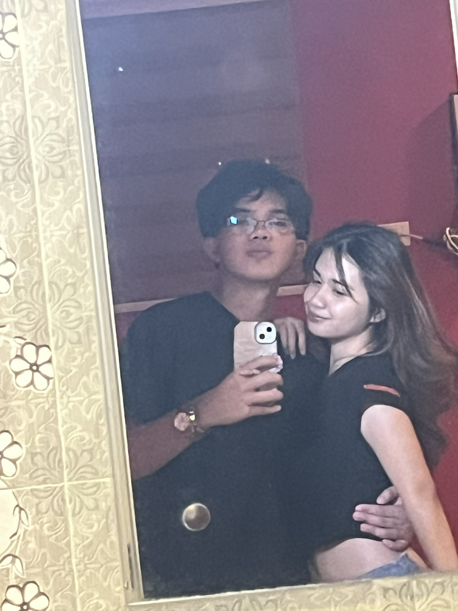
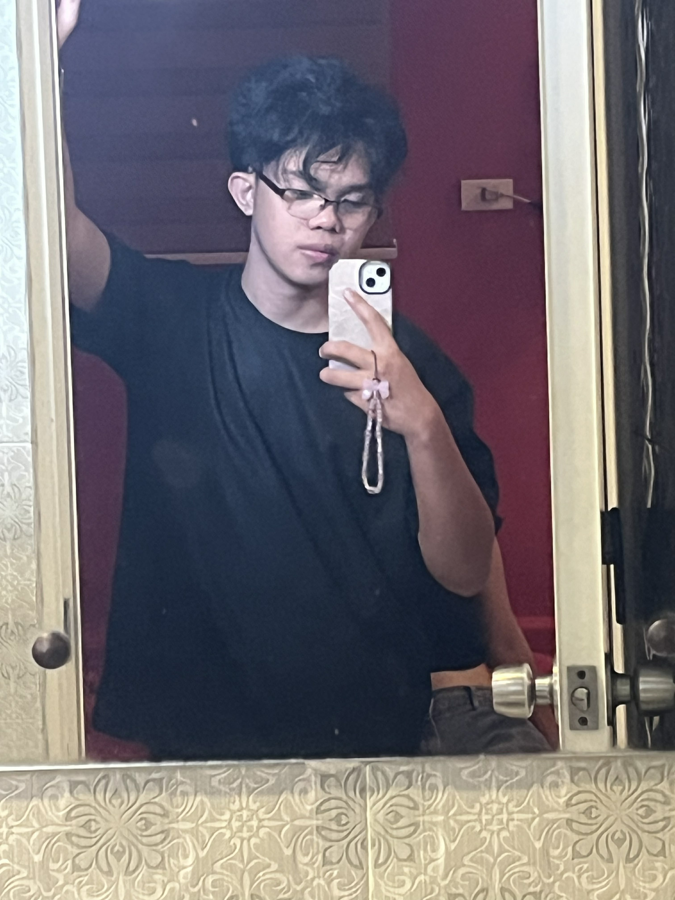


Happy 5th Monthsary beb
hindi madali. pero tayo pa rin.
Beb,


I don't really know how to start this. Because I know how much it hurt, and I also know I can't justify it.
I did it again. Not once — multiple times. Dropping a girl's name out of nowhere, with beauty as the context, in moments where I should have been more aware of how that lands on you. I wasn't. And that's the problem. I wasn't thinking about you the way I should have been.
I want to say I didn't mean it, because I genuinely didn't. But "I didn't mean it" stops meaning much when it keeps happening. You felt what it was pointing at — that you weren't fully seen in those moments, that I was being careless with something that actually matters to you. That feeling wasn't wrong. You were right to feel it.
This isn't just a sorry letter. It's me acknowledging that something in how I communicate needs to change — how present I am, how patient I am, how much I actually think before I speak. You don't owe me quick forgiveness. But I'm here, and I'm working on it.
Month five was hard, beb. But you're still here. And so am I. That counts for something.
I love you — all of you, through all of this.
Always yours,
Ianne


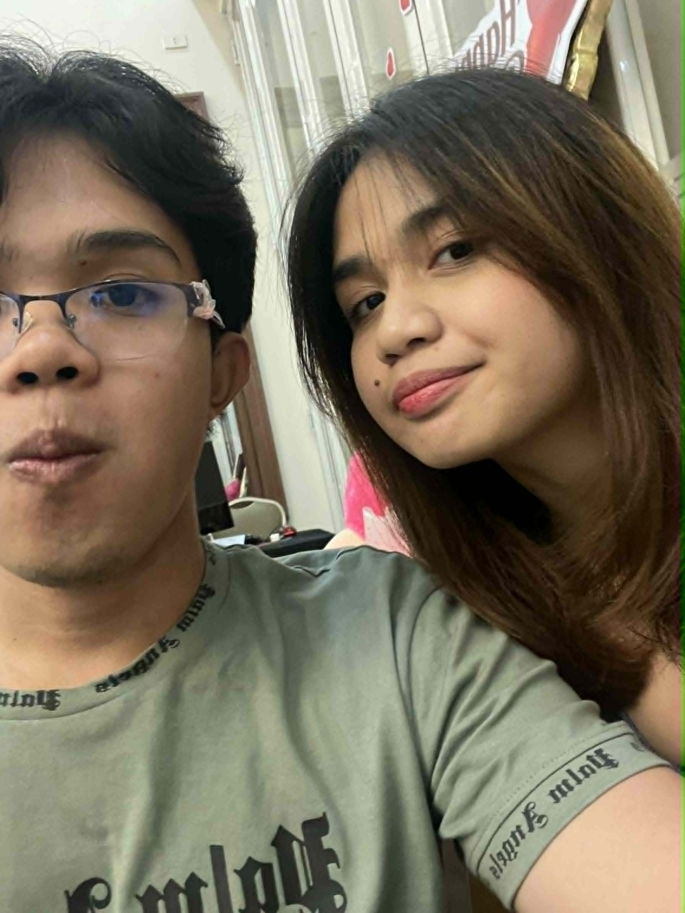
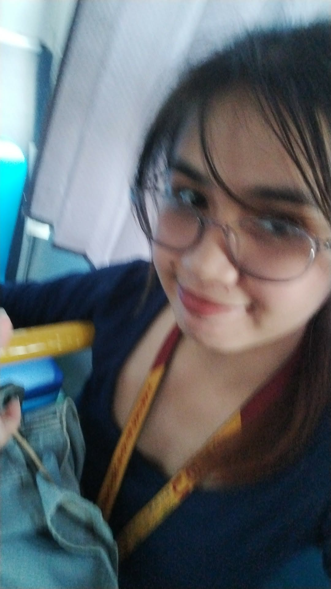
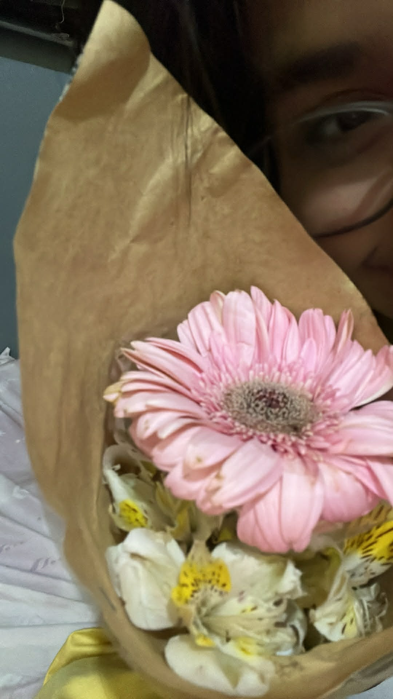
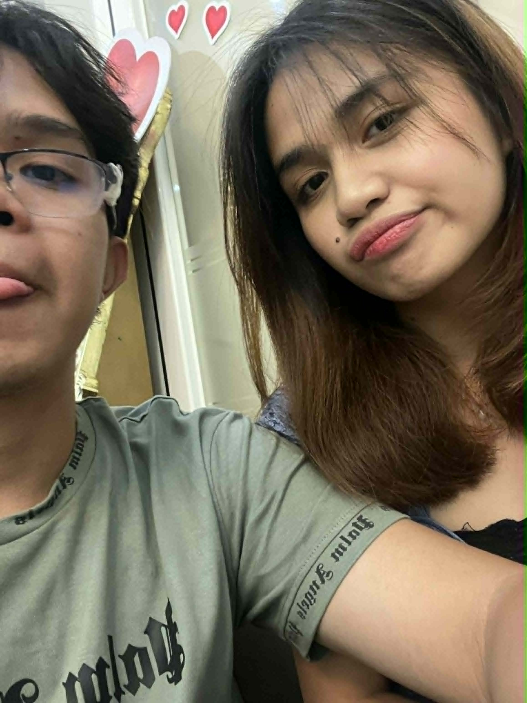